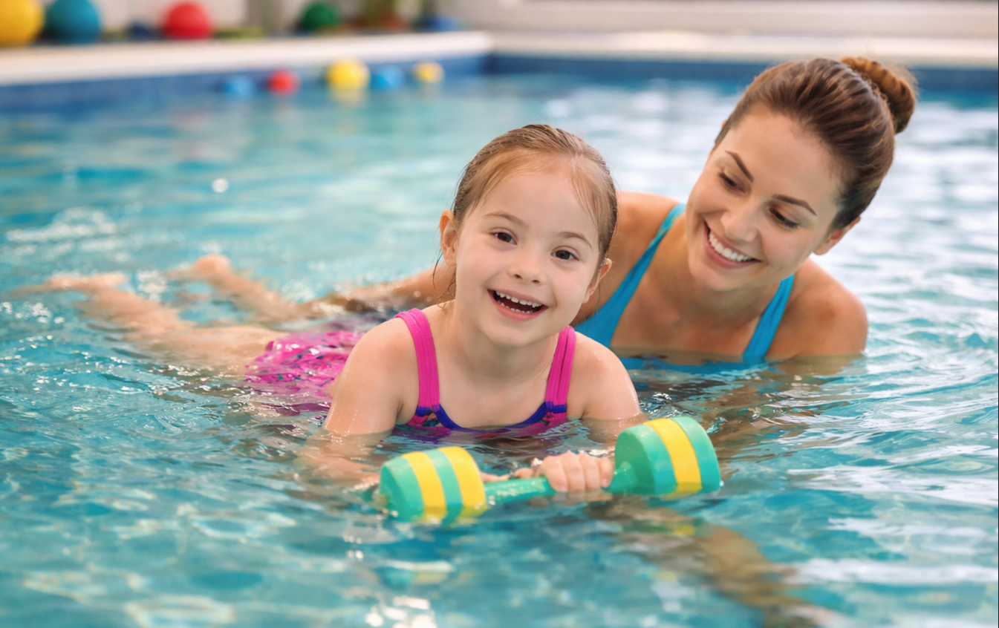
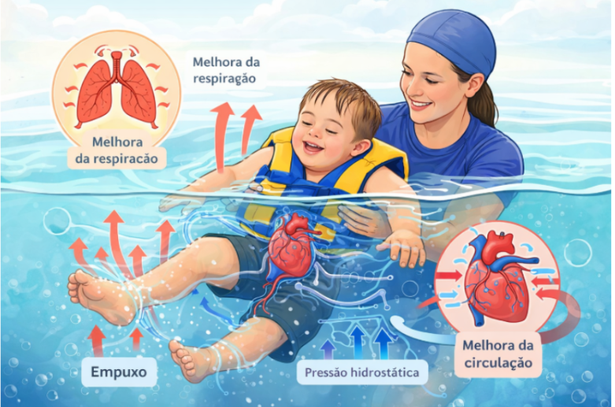

A síndrome de Down é uma condição genética que pode causar atraso no desenvolvimento motor, hipotonia (baixo tônus muscular), instabilidade articular e dificuldades de equilíbrio. Diante disso, intervenções terapêuticas precoces são essenciais para promover mais autonomia e qualidade de vida.
A terapia aquática se destaca como uma abordagem eficaz dentro da fisioterapia. Realizada em ambiente aquático, ela utiliza propriedades da água para facilitar movimentos que muitas vezes são difíceis de executar em solo .
Um dos principais diferenciais é o empuxo (flutuação), que reduz o peso corporal e diminui o impacto nas articulações, permitindo maior liberdade de movimento. Além disso, a pressão da água contribui para melhorar a respiração e a circulação, enquanto a temperatura aquecida favorece o relaxamento muscular .

Entre os principais benefícios estão:
- Melhora do equilíbrio e controle postural
- Aumento da força muscular e coordenação
- Ganho na função respiratória
- Maior independência nas atividades do dia a dia
Além dos aspectos físicos, a terapia aquática também promove ganhos emocionais e sociais. O ambiente lúdico estimula a participação, melhora a autoestima, favorece a interação social e contribui para o bem-estar geral .

Apesar dos resultados positivos, ainda existem limitações nos estudos, como a falta de padronização dos protocolos e poucos dados a longo prazo. Mesmo assim, a terapia aquática é considerada uma ferramenta segura e altamente recomendada quando integrada a um plano terapêutico individualizado.
Em resumo: mais do que um recurso físico, a terapia aquática é uma estratégia completa que contribui para o desenvolvimento global, promovendo saúde, autonomia e inclusão.

Este conteúdo foi produzido por acadêmicos de Fisioterapia com o apoio de imagens e vídeos gerados por inteligência artificial, utilizados para enriquecer a experiência visual e transmitir a mensagem com mais sensibilidade.
Esse texto é apenas para fins informativos. Para orientação ou diagnóstico médico, consulte um profissional.
Referências:
- ● OGONOWSKA-SLODOWNIK, A. et al. Aquatic Therapy in Children and Adolescents with Disabilities: A Scoping Review. Children, v. 11, n. 1404, 2024.
- ● GEORGIEVA, D.; IVANOVA, V. Aquatic gymnastics program to improve kinesthetic manual praxis in children with Down syndrome. Pedagogy of Physical Culture and Sports, v. 27, p. 305–311, 2023 (citado em Ogonowska-Slodownik).
- ● NACZK, A.; GAJEWSKA, E.; NACZK, M. Effectiveness of Swimming Program in Adolescents with Down Syndrome. International Journal of Environmental Research and Public Health, v. 18, n. 7441, 2021 (citado em Ogonowska-Slodownik).